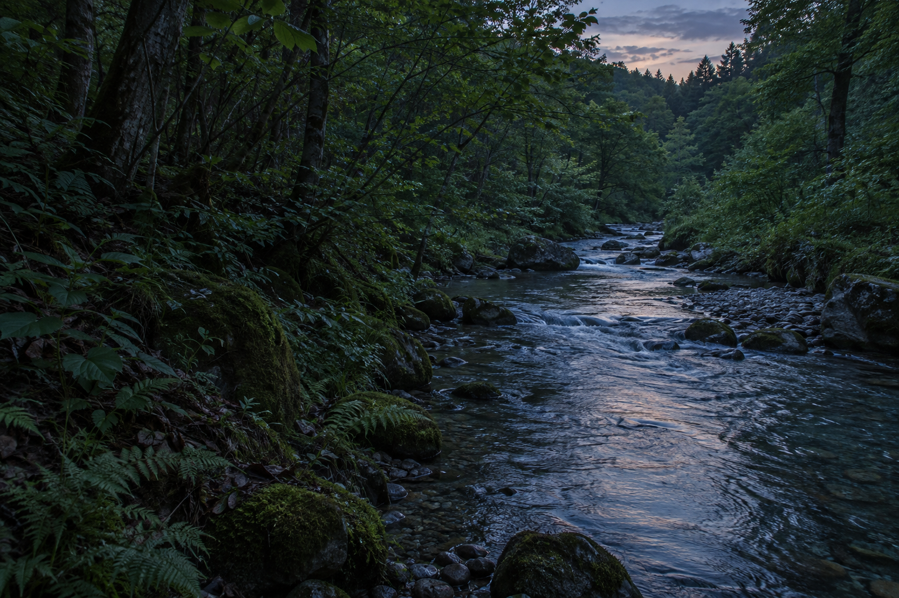

夏 · Fireflies at dusk
螢 螢 · Hotaru · Summer
薄暮的水邊，草間浮起點點光。京都的初夏。 At dusk by the water, points of light rise from the grass. Early summer in Kyoto.
夏
HOTARU · FIREFLIES AT DUSK · — 枚
夏天是白晝的綠，也是入夜的光。以下這些，是幾個夏天裡在綠意與水光之間按下的快門——雨後的青楓、苔上的水珠，與琉璃光院映在水面的一片綠。點任一張，慢慢翻閱。